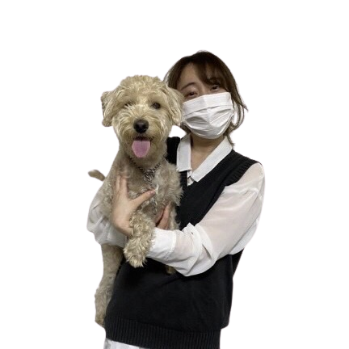
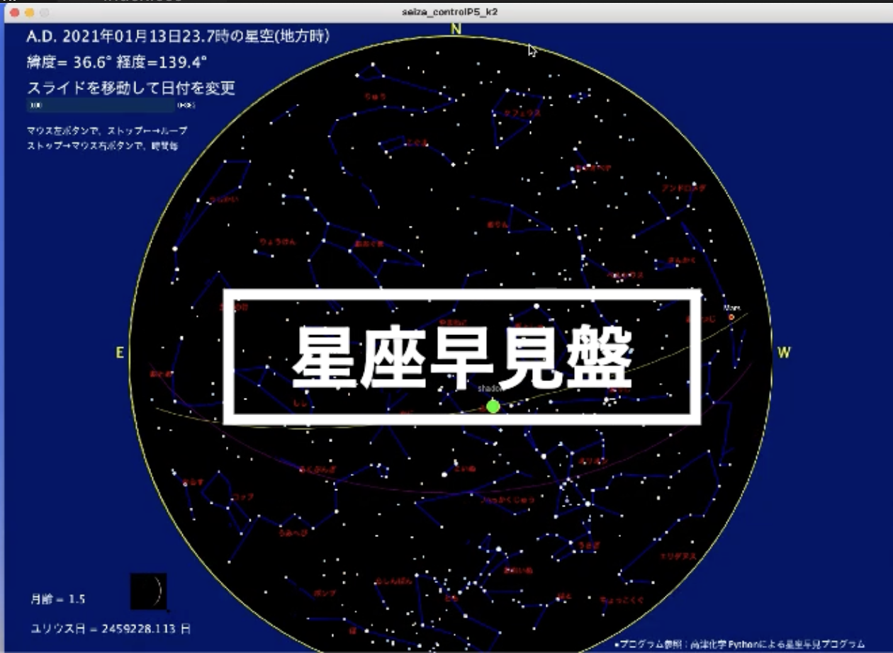
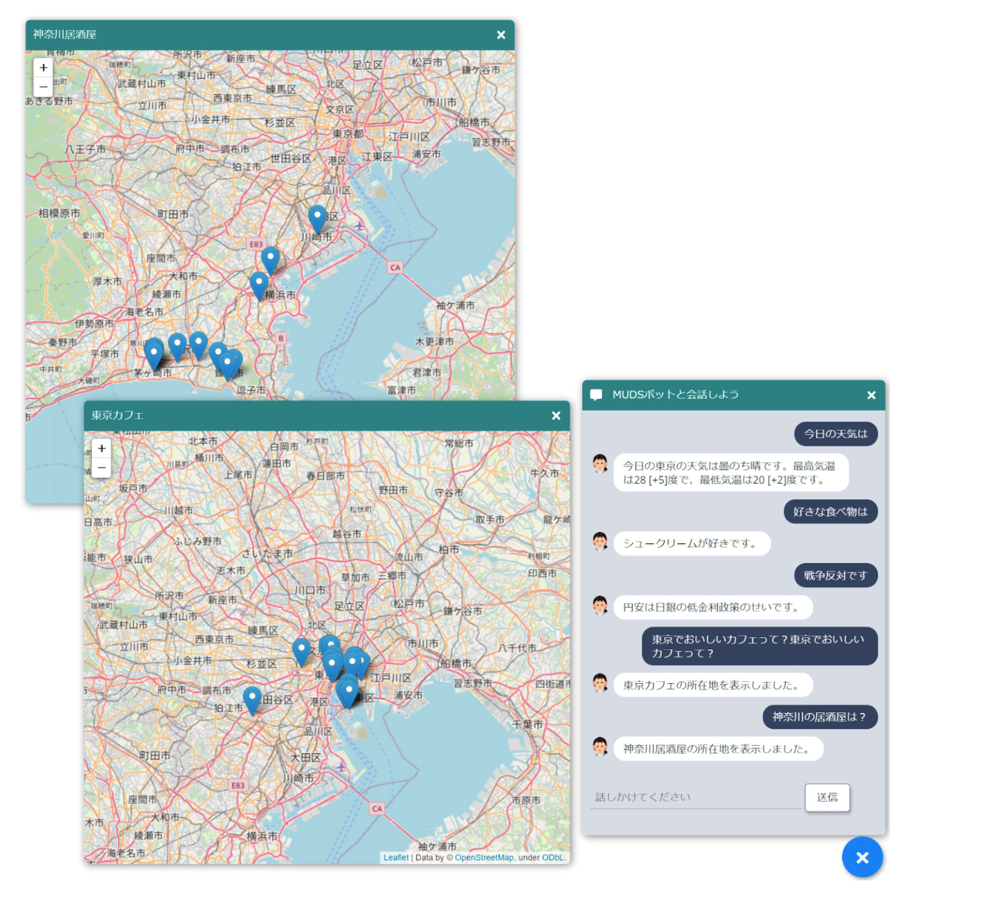

植田 麻実
武蔵野大学データサイエンス学部 所属
About
- 趣味 ： 犬の散歩、お笑いを見ること、ゲーム
- 目標 ： 東京０３のライブに行く
- 興味分野： 生物学、アルゴリズム、機械学習
Skill
- ・HTML/CSS
- ・Python
- ・Unity
- ・C#
Field
- ・アンサンブル機械学習
- ・アルゴリズム
- ・生物学
- ・画像処理
- ・データサイエンス
Production
カッコウ探索アルゴリズムを応用による抽象画を対象としたユーザの嗜好に合致したリコメンド方式の実現
概要
カッコウの"托卵行動"をもとに作られた『カッコウ探索アルゴリズム』を用いた抽象画のリコメンドシステム
キーワード
最適化アルゴリズム/格好探索アルゴリズム/K-means/python
高津化学が公開している星座早見盤のプログラムを応用しprosessing上で動かしてみた

概要
高津化学が公開している星座早見盤のプログラムを応用した生年月日を入力とした動的な星座早見盤の実装
キーワード
processing/python
チャットボットとの会話から目的地マップを示す

概要
チャットボットとの会話から、ユーザの行きたい場所の提案先を示すシステム
キーワード
Flask/SQL/beautiful soup/janome/python